1はじめに
使う PC と、送り先のツールに合わせて準備します。
| Windows | Microsoft Store の「Windowsアプリ版」を使います。ココフォリアへは、拡張機能なしでクリックから直接送れます。 |
|---|---|
| Mac | 「Macアプリ版」を使います。ココフォリアへ送るときは、Chrome の拡張機能「ココフォリアパレット」を入れてください。拡張なしでも、クリックでコピーして貼り付けられます。 |
| Tekey | Windows・Mac とも、アプリから Tekey の部屋に直接送れます（Tekey に送る）。 |
| そのほかのツール | クリックでコピーして、チャット欄に貼り付けます。 |
ヒントアプリを開くと、まず「ホーム」が出ます。左上のロゴを押すと、いつでもホームに戻れます。上の シナリオ 卓 探索者 で画面を切り替えます。
2シナリオを読み込む
PDF・テキスト・Word・Web 公開型の HTML を読み込めます。章や見出しは自動で目次になります。
- シナリオ の画面で、右上の ＋ 追加 を押してファイルを選びます（画面にファイルをドラッグしても入ります）。
- 「解析の設定」が開きます。左に目次、真ん中に本文、右に見出しの決まりが出ます。
- 見出しの記号（■ や ▼ など）ごとに「章」「見出し」「小見出し」などを選び、この設定で再解析して開く を押します。

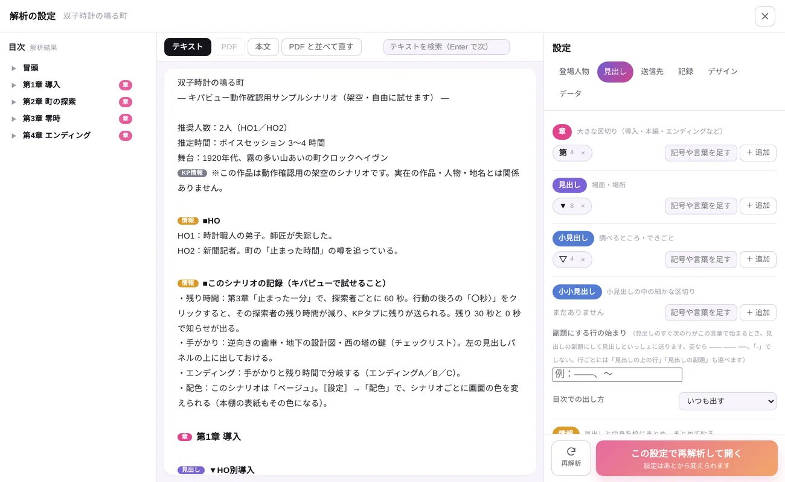
- 2 段組みの PDF も、左の段から順に読みます。
- 本文と資料集など、複数のファイルを 1 つのシナリオにまとめられます。
- 「漢字（かな）」と書いてある読みは、ふりがなにして表示します。
- 見出しの決まりは、あとから 設定 の「見出し」で変えられます。
3ココフォリアに送る
本文をクリックすると、ココフォリアのチャットに届きます。

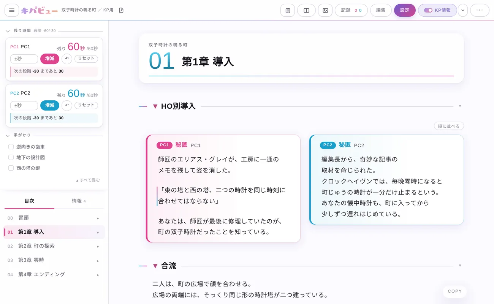
送り方
- 本文の文をクリック：その 1 行を送ります。
- 左の余白をクリック：段落・見出し・章をまとめて送ります。
- 文字をドラッグして選んでから押す：選んだところだけを送ります。
- 【HO1秘匿】などの秘匿は、人ごとに色分けされ、その人の秘匿タブに送られます。
送り先の部屋とタブを決める
- 上のバーの 設定 を押し、送信先 を開きます。
- 「送り先の部屋」で ココフォリア を選び、部屋の URL を貼ります（開いている部屋が 1 つなら自動で選ばれます）。
- 「タブ名」で、メイン・情報・秘匿などのタブを、ココフォリアのタブの名前に合わせます。

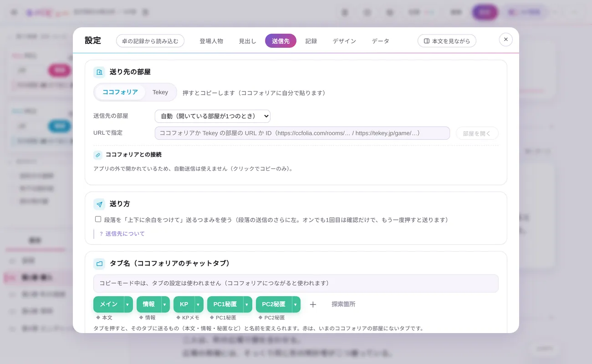
NPC の名前・PC の名前
設定 の 登場人物 で、NPC のセリフをその NPC の名前で送るか、本文の「PC1」などを探索者の名前に置き換えるかを決められます。

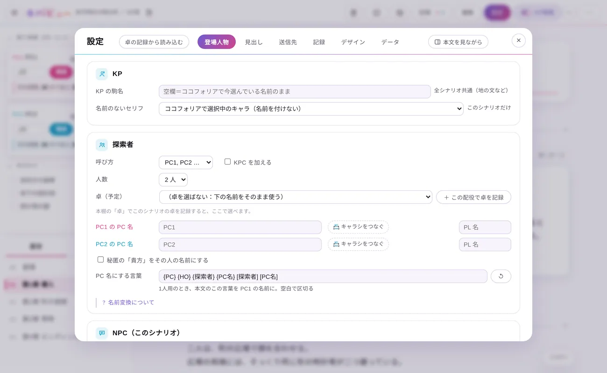
4Tekey に送る
Tekey の部屋に、アプリから直接送れます。タブの振り分け・発言者・文字色にも対応しています。
- 設定 → 送信先 で、つなぎ方を Tekey にします。
- Tekey の部屋の URL（または部屋の ID）を貼ります。
- タブの設定は、ココフォリアのときと同じ並べ方で決められます。

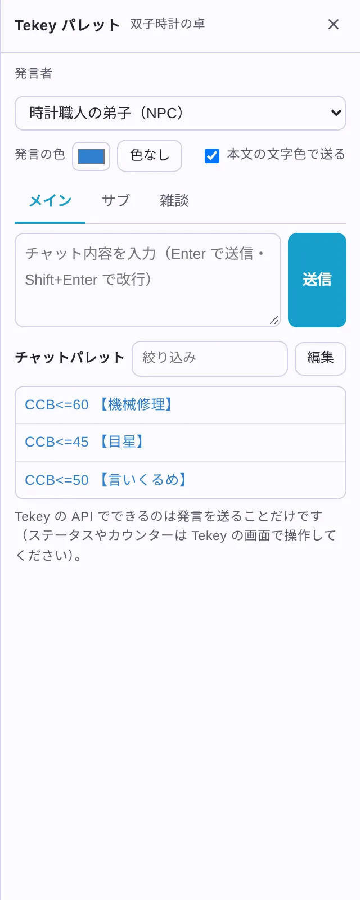
5本文を直す
読み込んだシナリオの本文を、その場で直せます。元のファイルは書き換えません。
- 上のバーの 編集 を押すと、右に「編集モード」のパネルが開きます。
- 本文の段落を押して選び、文字を書き直します。
- パネルで、段落の種類（セリフ・見出し・情報・技能判定など）や、送り先のタブ・発言者を決めます。

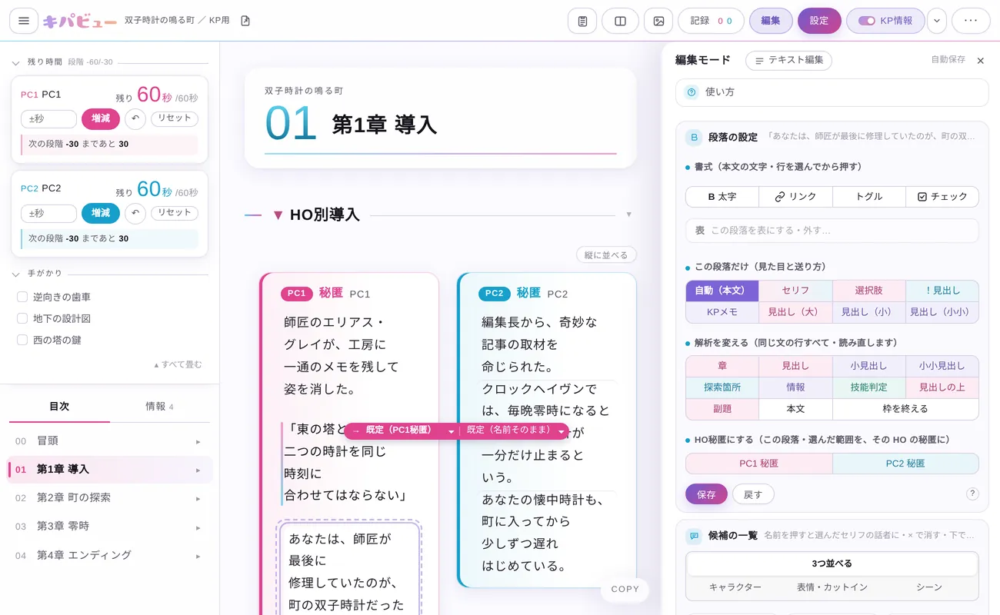
戻すCtrl+Z で元に戻し、Ctrl+Y でやり直せます（Mac は ⌘）。
6セッションを進める
探索箇所や技能判定は、自動でカードになります。

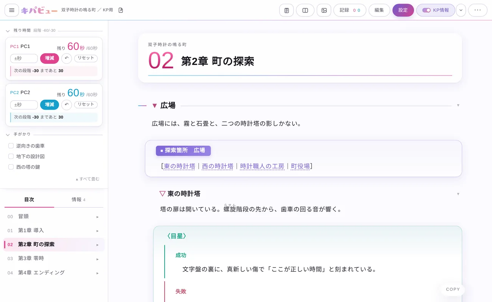
- 記録：SAN 喪失の合計・時間・ギミックの数値・フラグ・メモを、探索者ごとに残せます（設定 → 記録 でオン）。
- KPレスモード：本文を伏字にして、マウスを乗せた間だけ見せます（上のバーの ⋯ から）。
- 表情・カットイン：セリフに「@笑顔」のように書くと、表情差分やカットインを一緒に送れます。
7シナリオを管理する
「本棚」で、持っているシナリオを表紙・タグ・ステータスで並べます。

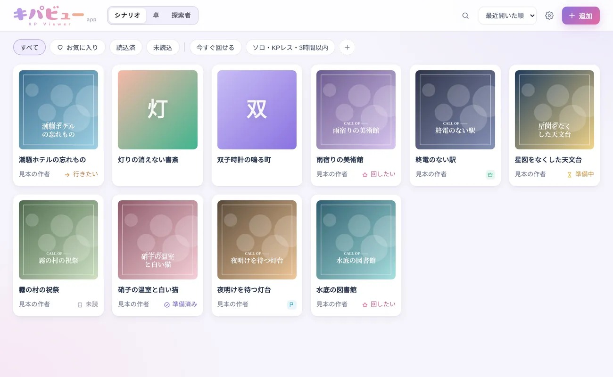
- 表紙を押すと、作者・人数・時間・ステータス（未読／回したい／準備中／KP済 など）を見たり直したりできます。
- 概要をコピー で、Discord にそのまま貼れる募集用の文を作れます。
- BOOTH Library Manager（Windows）のフォルダや、BOOTH・TALTO・pixiv のページから登録できます。
- 本棚は毎日自動でバックアップします。

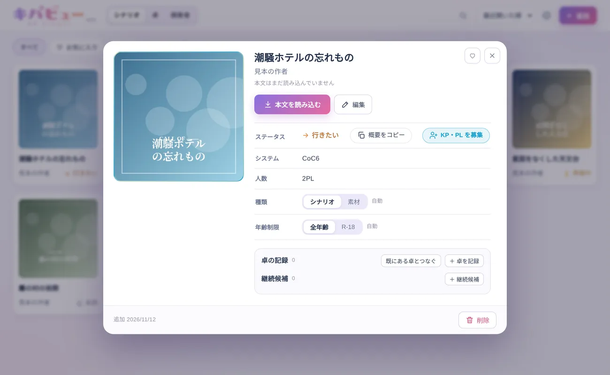
8卓の予定と記録
ホームで、次の卓までの時間・カレンダー・記録や準備をまとめて見られます。

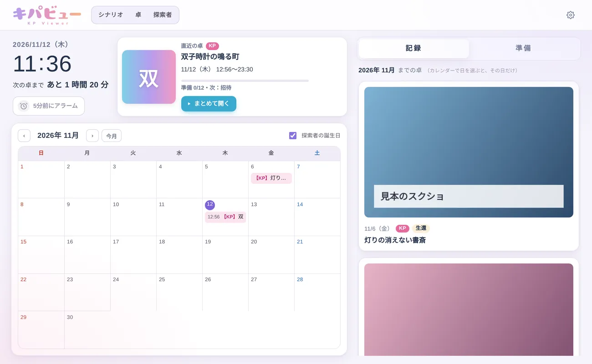
卓を登録する
- 卓 の画面で ＋ 卓を追加（ホームでは 新規登録する）を押します。
- 卓名・日程・KP・PL・探索者を入れます。本棚のシナリオとつなぐと、表紙が出ます。
- 終わったら、エンド・スクショ・ココフォリアのログを入れておけます。

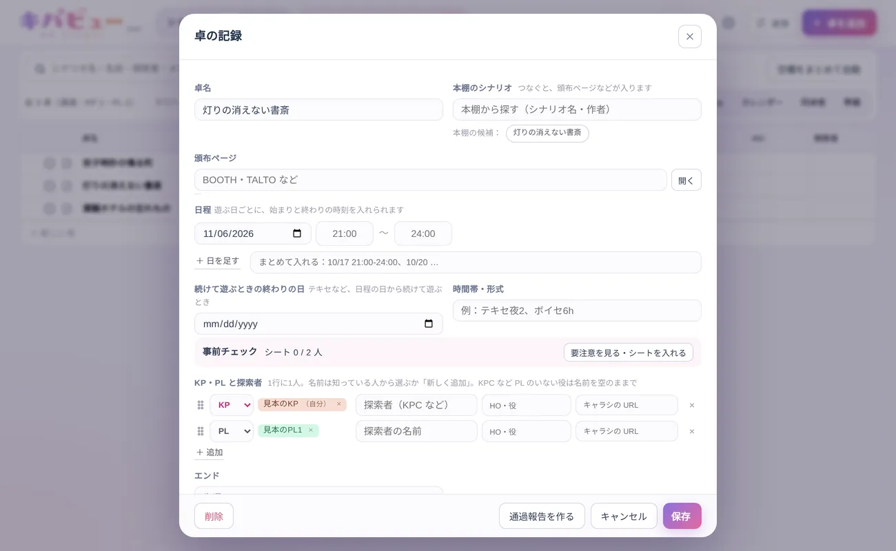
便利な使い方
- 5分前にアラーム：ホームのアラームをオンにすると、卓の 5 分前に止めるまで鳴らします（キパビューを開いている間だけ）。音も選べます。
- まとめて開く：直近の卓のカードから、シナリオの本文・ココフォリアの部屋・VC を一度に開けます。
- 準備のチェック：「準備」で、招待・日程確定・秘匿配布などを卓ごとにチェックできます。
- カレンダー：Google カレンダーの予定や、探索者の誕生日も重ねて見られます。

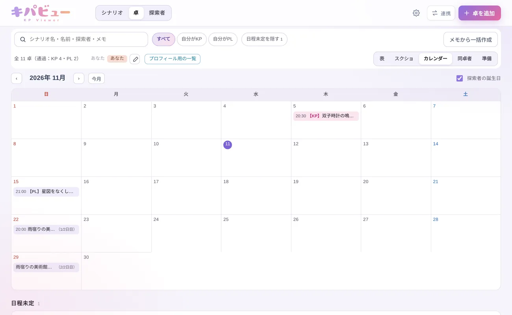
9探索者を管理する
探索者のキャラシ・立ち絵・能力値・技能をまとめて管理できます。
- いあきゃら・キャラクター保管所などの URL や、ココフォリアの駒から取り込めます。
- 表・カード・立ち絵・分布（マトリクス）で並べられます。
- 卓で育った技能の値は、拡張機能を使っていあきゃらに反映できます。

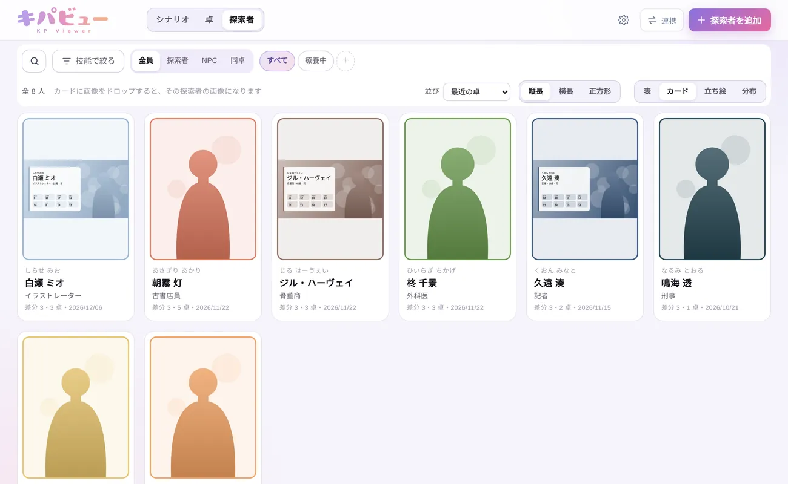

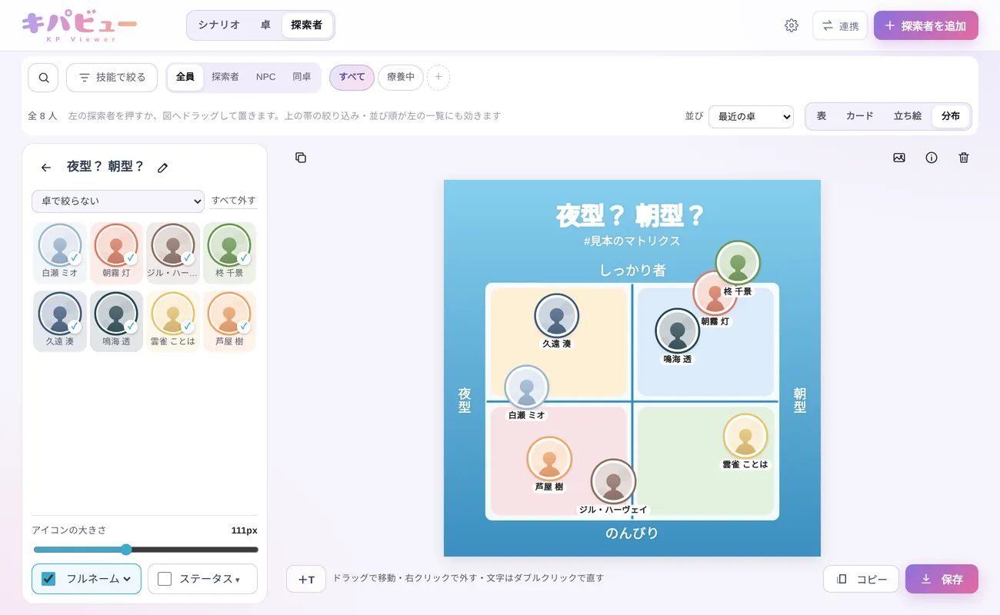
10素材を作る
上のバーの画像のボタンから「画像を作る」を開きます。
- 場所の帯・探索箇所の一覧・ToDo を、透過画像で書き出せます。
- 「文字（縦・横）」では、自分のフォントを選んで、縦書き・横書きの文字を作れます。文字が現れるアニメーションにもできます。
- 形式は PNG と WebP（軽い）から選べます。

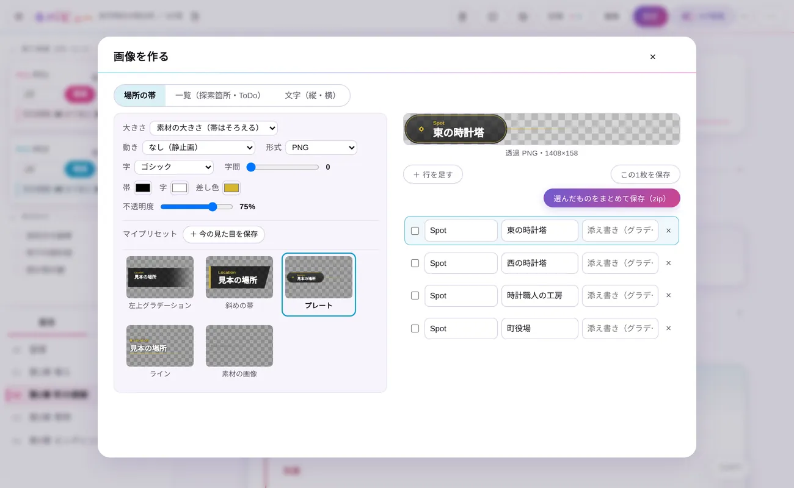

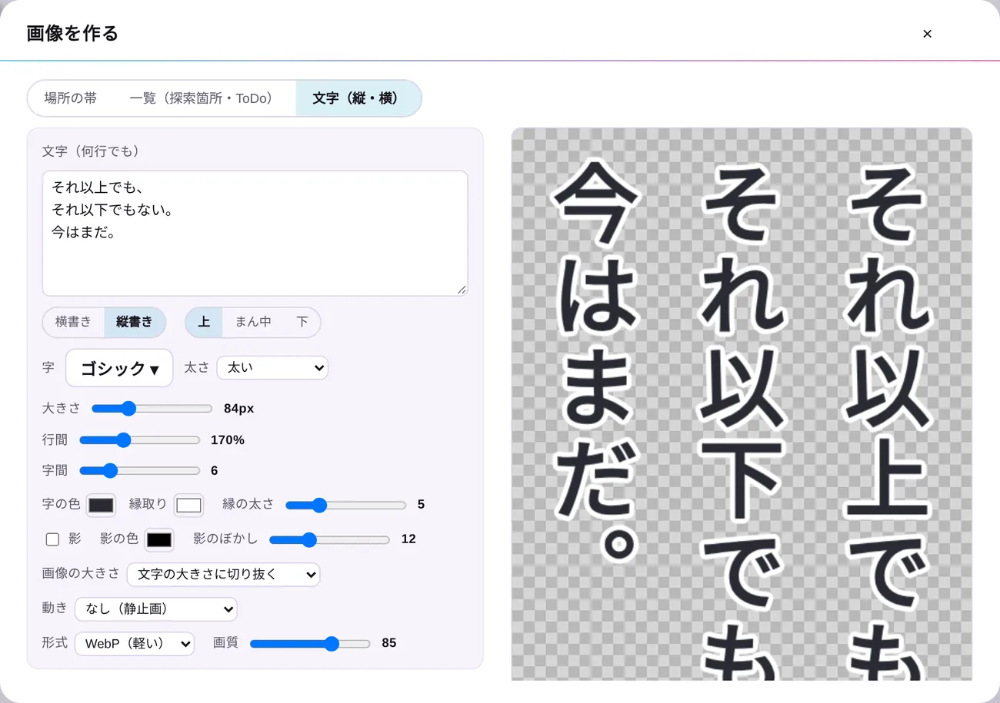
?困ったとき
- クリックしても送られない
- 設定 → 送信先 で、つなぎ方と送り先の部屋を確かめてください。Mac は拡張機能「ココフォリアパレット」とつながっている必要があります。
- 見出しや章がうまく分かれない
- 設定 → 見出し（解析の設定）で、記号ごとの役割を変えて再解析してください。1 行だけ変えたいときは、編集モードで段落の種類を選びます。
- 間違えて消した・変えてしまった
- Ctrl+Z で戻せます。本棚は毎日自動でバックアップしています。
- ほかのウィンドウの後ろに回らない
- 設定 → 送信先 → 「送り方」の「このウィンドウを常に手前に表示」を外してください。
わからないことや不具合は、Discord サーバーか X でお知らせください。